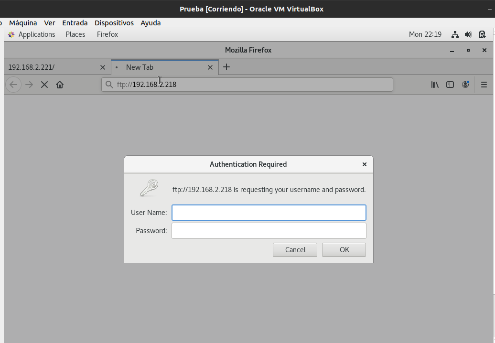

Universidad Nacional de Ingeniería
Facultad de Ciencias
Escuela Profesional de Ciencias de la Computación
Administración de Redes
Proyecto Capstone: Internetworking
FTP (siglas en inglés de File Transfer Protocol, ‘Protocolo de Transferencia de Archivos’),
es un protocolo de red para la transferencia de archivos entre sistemas interconectados o
enlazados a Internet, basado en la arquitectura cliente-servidor. Desde un equipo cliente
se puede conectar a un servidor para descargar archivos desde él o para enviarle archivos,
independientemente del sistema operativo utilizado en cada equipo.
Para este servicio de un servidor FTP alojado en el DMZ de la organización se utilizó una máquina virtual Centos7 con un 4 GB de RAM , se instaló el paquete vsftpd para la transferencia de archivos de un host a otro. Las configuraciones que se hicieron fue permitir que host anonimos se conecten al servidor .
Para que un cliente se pueda conectar al servicio web es necesario que del servidor ftp se permita el servicio ftp
En nuestra pc prueba se mostrará lo siguiente , el usuario que permite es el propio root del servidor

Almacena todos los archivos propios de una página web (texto, imagen, vídeo, etc.)
y los muestra a los clientes a través de los navegadores. Utiliza el protocolo HTTP
(Hipertext Transfer Protocol).El espacio que proporcionan estos servidores para alojar
tu propio sitio web se denomina hosting.
Para este servicio de un servidor web alojado en el DMZ de la organización se uilizo una máquina virtual Centos7 con un 4 GB de RAM , se instaló el paquete httpd y por defecto llama los recursos que se encuentran alojados en /var/www/html . En esa carpeta alojamos un index.html.

Para que un cliente se pueda conectar al servicio web es necesario que del servidor web habilitemos con firewalld.

En nuestra pc prueba se vera lo siguiente cuando en un navegador busquemos la IP del servidor web.

También conocido como Mail Server, es un ordenador que envía, recibe y almacena los mensajes
de correo electrónico o emails.
A su vez, se dividen en servidores POP3 y servidores SMTP. Los primeros almacenan los correos
entrantes y lo sirven al usuario cuando se conecta. Los segundos se encargan de enviar el
correo saliente. Existe un tercer tipo que son los servidores IMAP, que permiten
administrar el correo electrónico sin necesidad de descargarlo en tu ordenador o en
un gestor de correo.
Para instalar el servidor SMTP se instaló los paquetes sendmail, sendmail-cf , dovecot y squirrelmail. Y apagamos el servicio postfix y renombramos el hostname.
En el archivo /etc/dovecot/dovecot.conf habilitamos los protocolos IMAP y pop3.
En el archivo /etc/dovecot/conf.d/10-mail.conf agregamos la linea mail_location = "mail_location = mbox: ~/mail:INBOX=/var/mail/%u"
En el archivo /etc/dovecot/conf.d/10-auth.conf activamos disable_plaintext_auth = yes.
En el archivo /etc/mail/sendmail.mc agregamos DAEMON_OPTIONS (“port=smtp, Name=MTA”)dn1
Ejecutamos en el terminal : m4 /etc/mail/sendmail.mc > /etc/mail/sendmail.cf
Ahora pasaremos a configurar squirrelmail :
Activamos los servicios:
Nos conectamos desde una máquina prueba en su buscador favorito como http://192.168.220/webmail